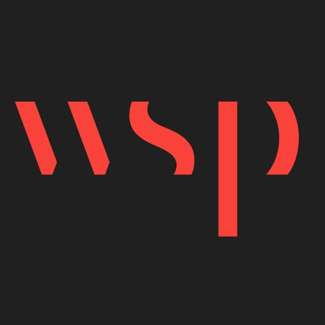
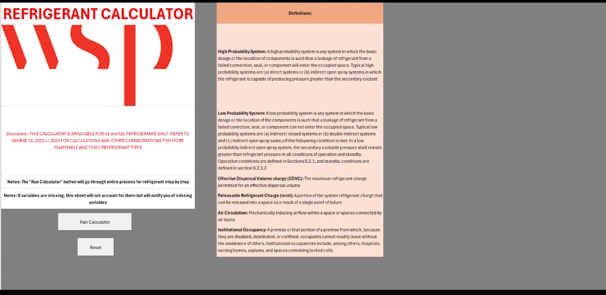
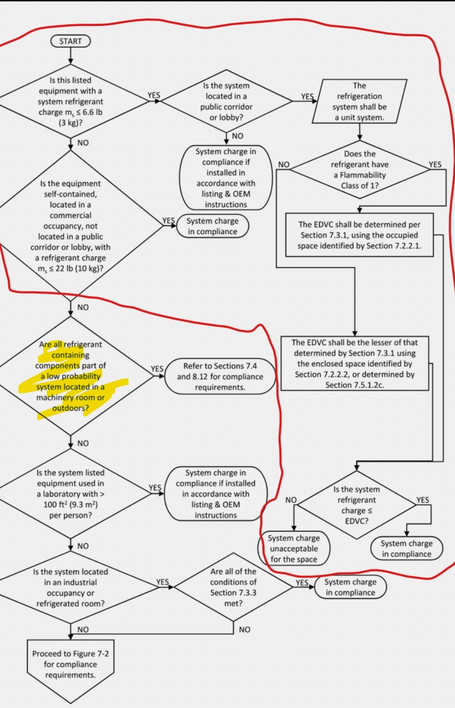
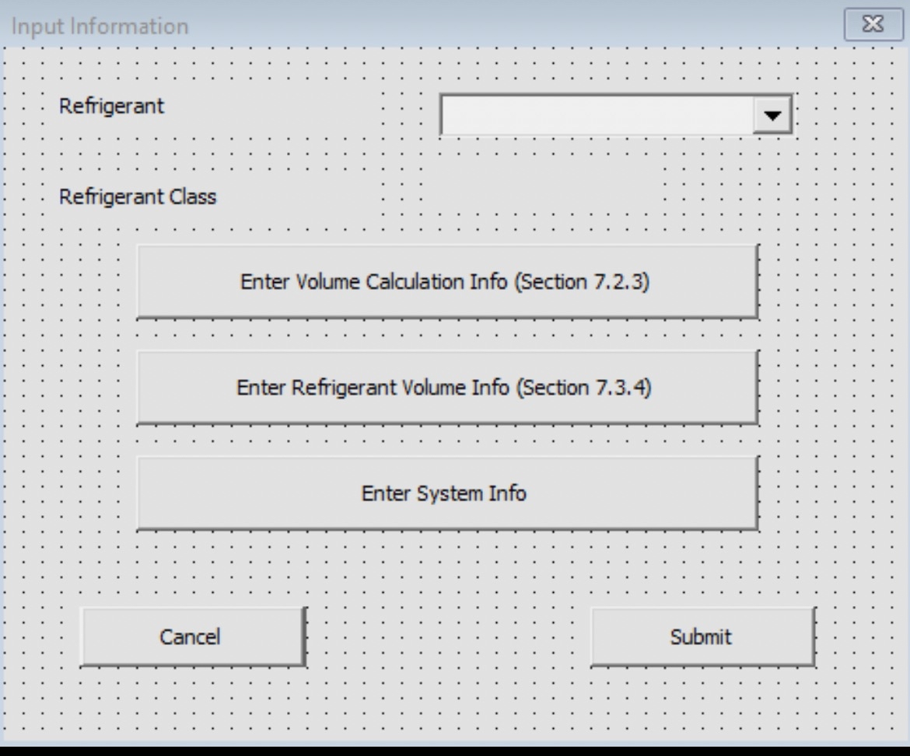
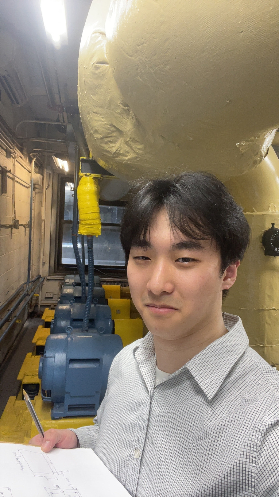

Work on HVAC systems and learn the fundamentals of engineering, collaboration, and industry in a corporate environment.

Role — Mechanical Engineering Intern: worked on various tasks including new software tools for the entire company division, HVAC designs for buildings, and on-site field work, while learning from other professionals in the industry.



